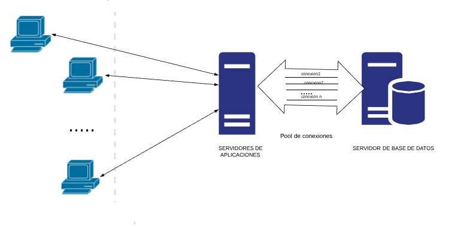

Acabamos de ver cómo se realiza una conexión a una base de datos. En ocasiones, sobre todo cuando se trabaja en el ámbito de las aplicaciones distribuidas, en entornos web, es recomendable gestionar las conexiones de otro modo.
Antes de ver en que consiste , veamos como funciona la creación de conexiones en una aplicación clásica de escritorio cliente-servidor y luego veamos los problemas se seguir con dicha estructura en una aplicación web.
Problemas en la creación de conexiones
En una aplicación de escritorio se crea una conexión de base de datos al iniciar la aplicación y se cierra al finalizar la aplicación. Es decir que cada usuario que inicia la aplicación tiene una conexión en exclusiva para él. Y obviamente sería imposible compartirlas ya que cada aplicación estará en un ordenador independiente.
En una aplicación Web podríamos seguir un esquema similar , en el que cada usuario nuevo que se conecta a nuestra aplicación se le crea una conexión y al salir de la aplicación que se cierre su conexión. Esto que aparentemente es sencillo tiene unos problemas debido a la diferente naturaleza de las aplicaciones de escritorio y las web.
Si siguiéramos el mismo patrón de creación de conexiones de aplicaciones de escritorio en aplicaciones web acabaríamos con una cantidad enorme de conexiones activas (debido al gran número de usuarios) y con gran cantidad de conexiones abiertas sin usar (debido a usuarios que abandonan el portal y no lo hemos detectado).
Consecuencia de los anterior al tener tantas conexiones a la base de datos se acabaría cayendo el servidor de base de datos debido a los recursos consumidos por todas las conexiones.
Podemos pensar que nuestro servidor puede aguantar todas esas conexiones ya que podemos tener pocos usuarios pero no suele ser así debido a:
- Si no se cierran las conexiones aun teniendo pocos usuarios es probable que acabemos saturando al servidor de conexiones sin usar.
- Las aplicaciones Web pueden tener picos de mucho tráfico, donde sería normal que se excediera la capacidad de nuestro servidor.
- Sería muy sencillo hacernos un ataque de denegación de servicio y saturando el servidor haciendo que se crearan gran cantidad de conexiones que no se usen.
Una solución que nos evitaría las conexiones sin usar sería que se creara la conexión al iniciar cada petición web y se cerrara al finalizar dicha petición web. ¿El problema de eso? Crear y cerrar una conexión es muy costoso. Lo que tendríamos es una aplicación lentísima.
Pool de conexiones
El concepto de Pool de conexiones se ha estandarizado desde la versión 3.0 de JDBC.
La solución del pool de conexiones tiene que solucionar los siguientes problemas:
- No tener tantas conexiones como usuarios ya que el número de usuarios es demasiado elevado.
- Cerrar la conexión.

Veamos como funciona:
El servidor web tiene “n” conexiones ya creadas y conectadas a la base de datos (Se llaman conexiones esperando).
- Cuando llegan “m” peticiones web , la aplicación pide “m” conexiones al pool de conexiones, quedando esperando en el pool “n-m” conexiones. Esta operación es muy rápida ya que la conexión ya está creada y solo hay que marcarla como que alguien la está usando. Ahora hay “m” conexiones activas que está usando la aplicación.
- Cuando las peticiones web finalizan, las conexiones no se cierran sino que se devuelven al pool indicándole que ya se han acabado de usar las conexiones. Ahora vuelve a quedar “n” conexiones esperando en el pool. Esta operación también es muy rápida ya que realmente no se cierra ninguna conexión sino que simplemente se marcan como que ya no las están usando nadie.
-
Si se piden más conexiones de las que hay esperando en el pool se crearán en ese instante nuevas conexiones hasta el máximo de conexiones que permita el pool.
Al devolver una conexión al pool , ésta se queda esperando para que otra petición la pueda usar. Si hay ya demasiadas conexiones esperando a ser usadas se cerrarán para ahorrar recursos en el servidor de base de datos.
¿Qué hemos conseguido con el pool?
-
-
- Ahora las conexiones ya no se quedarán abiertas cuando el usuario se marcha del portal ya que cada conexión se pseudo-abre y pseudo-cierra con cada petición.
- No tenemos tantas conexiones como usuarios usan la aplicación ya que solo se necesitan tantas como usuarios hay haciendo una petición en ese instante. Pensemos por un momento en facebook. ¿cuandos usuarios están conectados a facebook? Supongamos “x”. Pero ¿cuantos están realmente haciendo una petición y no viendo los datos que se han servido? Supongamos “y”. Obviamente “y” es mucho menor que “x”. Con lo que nos hemos ahorrado “x-y” conexiones.
- Al iniciar un servidor Java EE, automáticamente el pool de conexiones crea un número de conexiones físicas iniciales.
-
Cuando un objeto Java del servidor J2EE necesita una conexión, la solicita a través del método dataSource.getConnection(), la fuente de datos javax.sql.DataSource habla con el pool de conexiones y éste le entrega una conexión lógica java.sql.Connection. Esta conexión lógica la recibe por último, el objeto Java.
Cuando un objeto Java del servidor Java EE desea cerrar una conexión a través del método connection.close(), la fuente de datos javax.sql.DataSource habla con el pool de conexiones y le devuelve la conexión lógica en cuestión.
Si hay un pico en la demanda de conexiones a la base de datos, el pool de conexiones de forma transparente crea más conexiones físicas de objetos tipo Connection. Si por el contrario las conexiones a la base de datos disminuyen, el pool de conexiones, también de forma transparente elimina conexiones físicas de objetos de tipo Connection.
Java platform Enterprise Edition o Java EE, anteriormente conocido como Java 2 platform Enterprise Edition o J2EE hasta la versión 1.4), es una plataforma de programación para desarrollar y ejecutar software de aplicaciones en Java con arquitectura de n niveles distribuida, basándose fundamentalmente en componentes de software modulares ejecutándose sobre un servidor de aplicaciones.